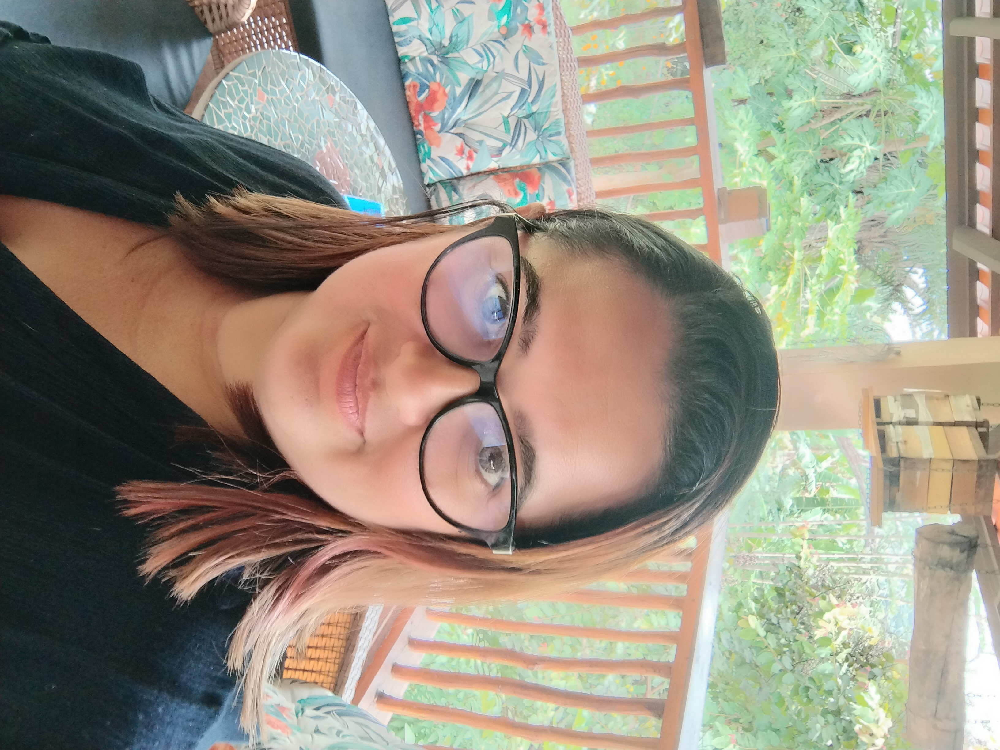

Portfólio profissional
Olá, eu sou Annie Auriema
Estudante de Cibersegurança • Suporte Técnico • Blue Team
Sou estudante de Tecnologia em Cibersegurança, com formação em Análise e Desenvolvimento de Sistemas e experiência em suporte técnico. Atualmente desenvolvo projetos práticos voltados para análise de phishing, SOC, Blue Team e segurança da informação.
Construindo experiência prática através de projetos em Cibersegurança.


